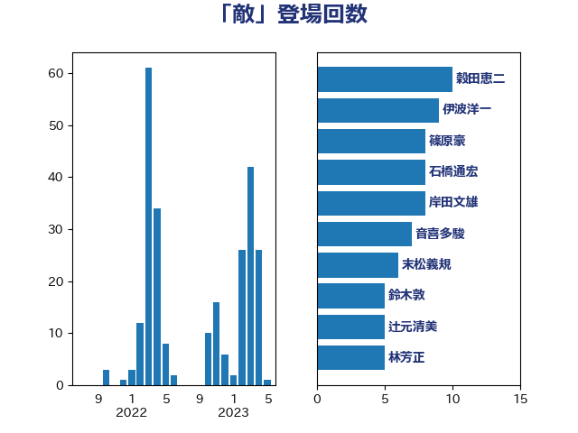

単語「敵」

| 穀田恵二 | 日本共産党 | 10 回 |
| 伊波洋一 | 無所属 | 9 回 |
| 篠原豪 | 立憲民主党 | 8 回 |
| 石橋通宏 | 立憲民主党 | 8 回 |
| 岸田文雄 | 自由民主党 | 8 回 |
| 音喜多駿 | 日本維新の会 | 7 回 |
| 末松義規 | 立憲民主党 | 6 回 |
| 鈴木敦 | 国民民主党 | 5 回 |
| 辻元清美 | 立憲民主党 | 5 回 |
| 林芳正 | 自由民主党 | 5 回 |
| 堀場幸子 | 日本維新の会 | 5 回 |
| 鬼木誠 | 立憲民主党 | 4 回 |
| 羽田次郎 | 立憲民主党 | 4 回 |
| 山添拓 | 日本共産党 | 4 回 |
| 長妻昭 | 立憲民主党 | 3 回 |
| 重徳和彦 | 立憲民主党 | 3 回 |
| 足立康史 | 日本維新の会 | 3 回 |
| 松原仁 | 立憲民主党 | 3 回 |
| 杉本和巳 | 日本維新の会 | 3 回 |
| 掘井健智 | 日本維新の会 | 3 回 |
| 小田原潔 | 自由民主党 | 3 回 |
| 宮本徹 | 日本共産党 | 3 回 |
| 奥野総一郎 | 立憲民主党 | 3 回 |
| 中川正春 | 立憲民主党 | 3 回 |
| 三木圭恵 | 日本維新の会 | 3 回 |
| 馬場伸幸 | 日本維新の会 | 2 回 |
| 若宮健嗣 | 自由民主党 | 2 回 |
| 緒方林太郎 | 無所属 | 2 回 |
| 笠井亮 | 日本共産党 | 2 回 |
| 福田昭夫 | 立憲民主党 | 2 回 |
| 田村智子 | 日本共産党 | 2 回 |
| 浜田靖一 | 自由民主党 | 2 回 |
| 浜田聡 | NHK党 | 2 回 |
| 浅田均 | 日本維新の会 | 2 回 |
| 松川るい | 自由民主党 | 2 回 |
| 本村伸子 | 日本共産党 | 2 回 |
| 斎藤アレックス | 国民民主党 | 2 回 |
| 志位和夫 | 日本共産党 | 2 回 |
| 山際大志郎 | 自由民主党 | 2 回 |
| 山崎誠 | 立憲民主党 | 2 回 |
| 佐藤正久 | 自由民主党 | 2 回 |
| 高良鉄美 | 無所属 | 1 回 |
| 青柳仁士 | 日本維新の会 | 1 回 |
| 阿部弘樹 | 日本維新の会 | 1 回 |
| 金村龍那 | 日本維新の会 | 1 回 |
| 赤池誠章 | 自由民主党 | 1 回 |
| 藤田文武 | 日本維新の会 | 1 回 |
| 落合貴之 | 立憲民主党 | 1 回 |
| 美延映夫 | 日本維新の会 | 1 回 |
| 田村貴昭 | 日本共産党 | 1 回 |
| 玉木雄一郎 | 国民民主党 | 1 回 |
| 熊谷裕人 | 立憲民主党 | 1 回 |
| 泉健太 | 立憲民主党 | 1 回 |
| 榛葉賀津也 | 国民民主党 | 1 回 |
| 枝野幸男 | 立憲民主党 | 1 回 |
| 杉尾秀哉 | 立憲民主党 | 1 回 |
| 日下正喜 | 公明党 | 1 回 |
| 徳永久志 | 立憲民主党 | 1 回 |
| 岩屋毅 | 自由民主党 | 1 回 |
| 山田太郎 | 自由民主党 | 1 回 |
| 山本太郎 | れいわ新選組 | 1 回 |
| 山本剛正 | 日本維新の会 | 1 回 |
| 山崎正恭 | 公明党 | 1 回 |
| 山下貴司 | 自由民主党 | 1 回 |
| 小野泰輔 | 日本維新の会 | 1 回 |
| 小西洋之 | 立憲民主党 | 1 回 |
| 小池晃 | 日本共産党 | 1 回 |
| 小林鷹之 | 自由民主党 | 1 回 |
| 小島敏文 | 自由民主党 | 1 回 |
| 和田有一朗 | 日本維新の会 | 1 回 |
| 伊藤孝恵 | 国民民主党 | 1 回 |
| 中谷真一 | 自由民主党 | 1 回 |
| 中島克仁 | 立憲民主党 | 1 回 |
| 上田清司 | 国民民主党 | 1 回 |
| 三上えり | 立憲民主党 | 1 回 |